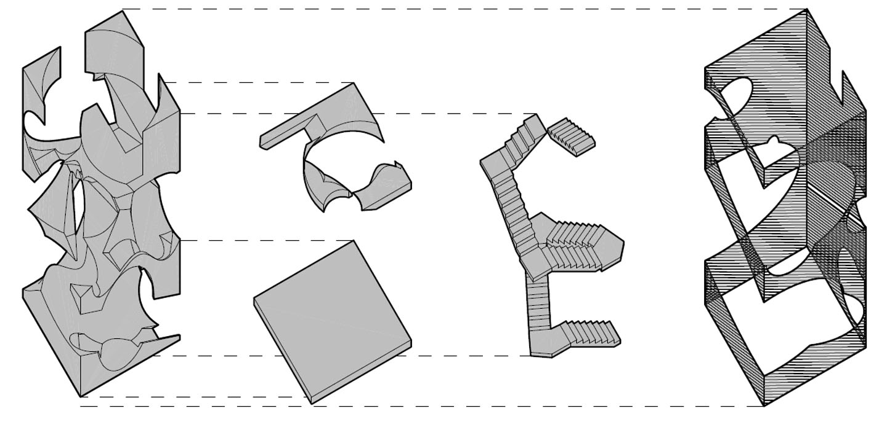
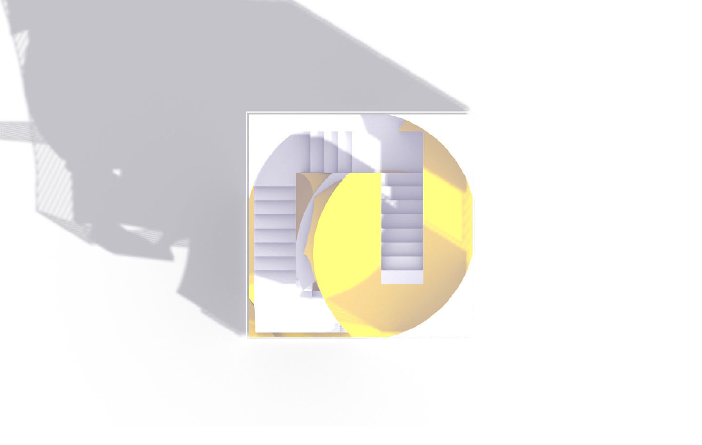
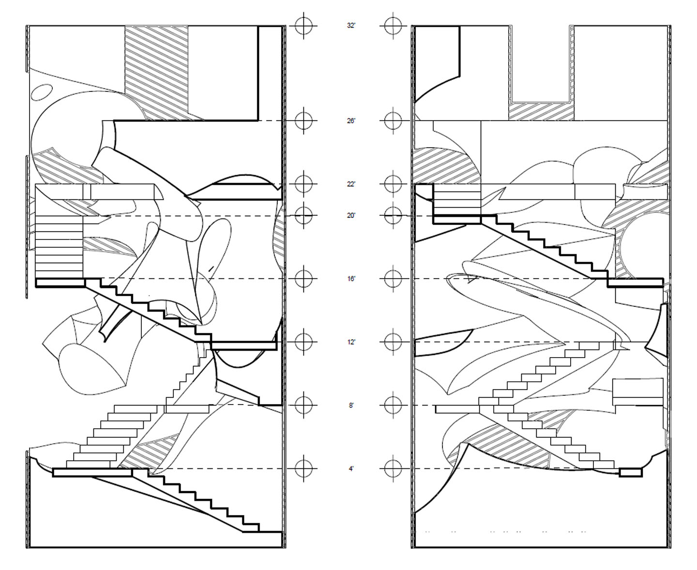

The Observation Tower
Spring 2022
Design Concept
The Observation Tower represents my first significant exploration of occupiable space using digital modeling software. The design process began with six cubic forms, from which geometry was strategically subtracted to create dynamic negative spaces. By stacking two of these transformed volumes, the final tower emerged—integrating circulation elements like stairs and platforms to enhance movement and optimize view corridors. A shell was then introduced to reinforce the aesthetic by echoing the geometric principles applied in shaping the original voids, resulting in a cohesive and visually compelling form.
Natural Inspiration
During the semester, I traveled with my family to New Mexico and visited the Carlsbad Caverns. While exploring the caverns, I was inspired by the natural spaces and volumes that were shaped over thousands of years. These awe-inspiring environments sparked my desire to design a structure that echoed the spatial grandeur and organic qualities found in nature.
Subtractive Space & Circulation
I aimed to create a space defined by large, open interiors—formed through subtractive design techniques that mirror natural erosion and cave formation. My goal was that, like the caverns, the structure would evoke a sense of wonder and encourage visitors to explore expansive voids carved within the form.
The circulation strategy was central to the design: stairways branch out through the mass much like the paths in Carlsbad Caverns. The contrast between the stairs’ linear geometry and the curving, sculptural shell creates a dynamic spatial dialogue. Near the top, a naturalistic observation tower emerges from the structure, maintaining the flowing curvature of the overall form while housing stairs that run through its center.
Project Summary
Overall, the tower offers a continuous and immersive spatial experience. Visitors would move through organically shaped volumes, guided by light filtering through small openings, illuminating vast interiors. The design is meant to make users feel simultaneously enclosed and inspired—much like walking through nature’s own architectural masterpiece.